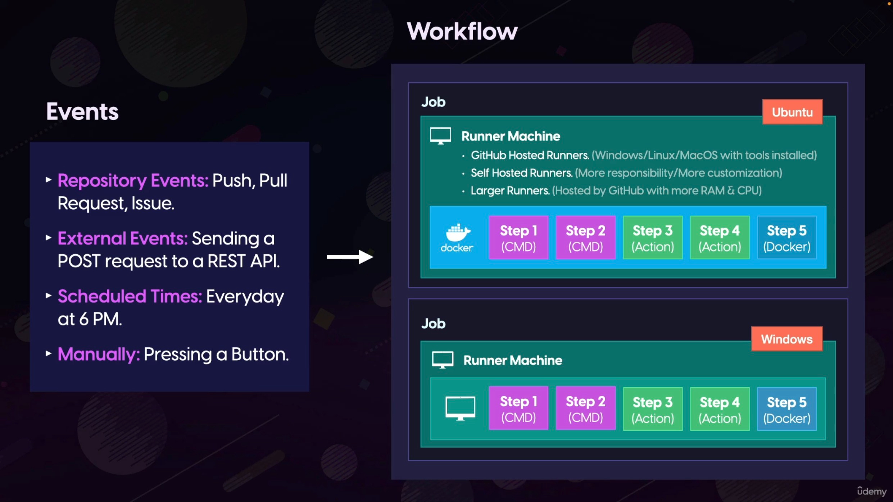
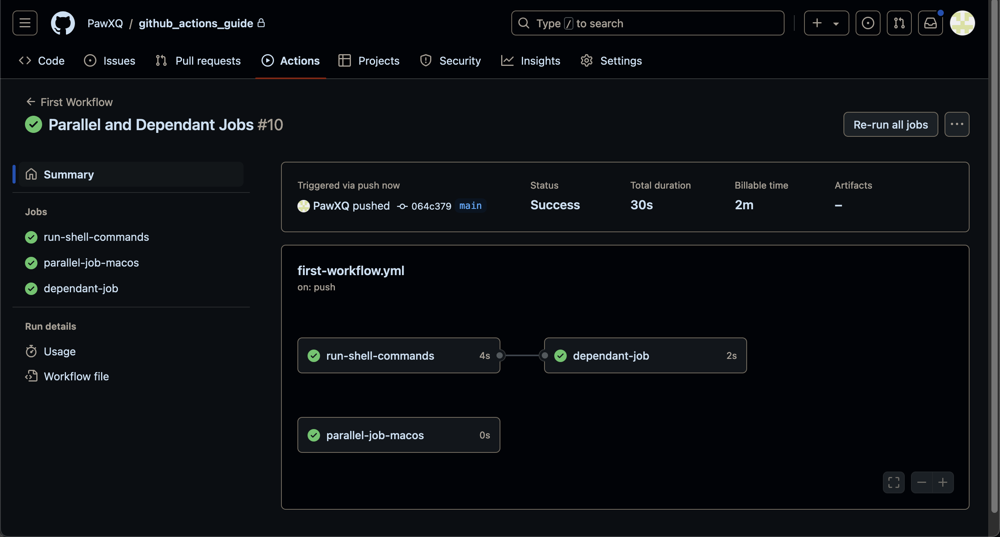
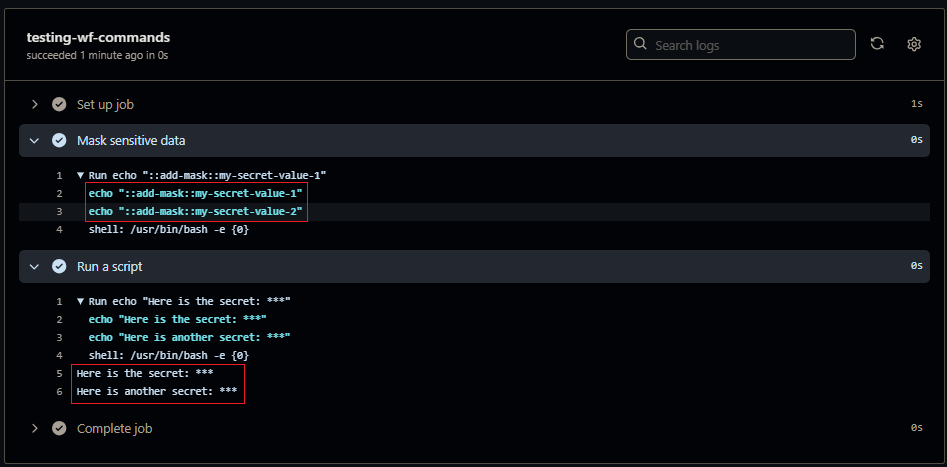

[Github_Actions] Chapter1 Introduction & Basic Concepts
Contents
REF
紀錄學習 The Complete GitHub Actions & Workflows Guide
GitHub Actions & Workflows
-
GitHub Actions 是自動化平台：
- 它是 GitHub 提供的自動化工具, 用來開發流程
-
Workflow 是自動化流程：
-
它是在 GitHub Actions 平台上運行的具體自動化任務
-
每個 workflow 由一個 YAML 文件定義
-
-
Workflow 的結構：
-
由一個或多個 jobs 組成
-
每個 job 包含多個 steps
-
Steps 可以是命令、actions 或 Docker 容器
-
-
觸發機制：
- Workflows 可以由各種事件觸發, 如 push、pull requests 等
-
運行環境：
- Jobs 在 runner(運行器)上執行, 可以是 GitHub 託管或自託管的機器
簡而言之, GitHub Actions 是 GitHub 提供的平台, 而 workflows 是在這個平台上定義和運行的具體自動化流程
Workflows 定義了在特定事件發生時應該執行的一系列動作

Job
一個 job 固定跑在同一個 Runner Machine, 內部含有多個 step
只有一個 job 沒問題, 就是由上而下執行
如果有多個 job 一般會來說 job 會並發(parallel)運行, 就是同時跑
如果需要相依性, 可以透過 needs 可以建立 job 之間的 dependent
- single dependent
jobs.<job_id>.needs: <job_id>
- multiple dependencies
jobs.<job_id>.needs: [<job_id>, <job_id>]
每個 job 需要重複設定 runs-on, 沒有 global 設定, 可以跑不同 runner
job sample
|
|
multiple job sample
|
|
設定 jobs dependent, 透過 job_id 設定
jobs dependent
|
|
Parallel & Dependent
|
|

Log & Debug Variables
開啟 runner debug 下載 archive logs 的時候會額外出現 runner 的 log
ACRIONS_RUNNER_DEBUG: true
開啟 step debug
ACRIONS_STEP_DEBUG: true
Skip actions
如果有修改其他內容, 想要 push 到 repo 但是不想觸發 actions 可以在 commit 中添加以下內容：
[skip ci][ci skip][no ci][skip actions][actions skip]
Workflow Command
Workflow commands for GitHub Actions
透過 echo "::add-mask::{value}" 可以將特定內容轉換成 * 字符輸出, 進行保密輸出
不同 job 之間如果需要對同樣的內容隱藏輸出, 需要重複 echo
每一次 echo 只能針對一種 {value} 進行轉換
要多個就需要重複 echo
|
|
|
|

shell and working directory
透過 run 執行 pwd, echo ${GITHUB_WORKSPACE} 會顯示 GitHub Actions 預設的工作目錄
change default shell & working directory
-
workflow 層級：
1 2 3 4 5 6name: Working Dirs & Shells on: [push] defaults: run: shell: bash # working-directory: <path> -
job 層級：
1 2 3 4 5<job.id>: runs-on: <job_work_environment> defaults: run: shell: pwsh -
step 層級：
1 2 3 4- name: <step_name> shell: python - name: <step_name> working-directory: <path>
Downloading out repository into the Runner Machine
預設 Github Actions 不會 clone repository 到 Gihub Actions 的 working directory, 需要手動將 repo 內的文件 clone 到 Gihub Actions 的 working directory
底下為在 Github Actions 中手動 clone 的方式
|
|
-
使用
git init初始化工作目錄中的新 git 儲存庫 -
添加遠端repo：使用
git remote add origin將repo URL 作為 remote- URL 格式包含 GitHub username(
${GITHUB_ACTOR})和 GitHub Token(${{ secrets.GITHUB_TOKEN }}), 用於驗證和存取儲存庫
- URL 格式包含 GitHub username(
-
從遠端拉取(fetch)repo：使用
git fetch origin -
指定分支：使用
git checkout main使用 main branch
這種方式雖然可以 clone repo 到 Github Actions 的 workging directory, 但是太過繁瑣, 容易出錯, branch 也會被 hardcode, 不易變更.
實際狀況中, 應根據 workflow 觸發的條件動態選擇 branch
之後會使用 actions 來自動化 clone 的過程, 不僅可以簡化代碼, 還可以動態選擇 branch, 適應不同的 workflow 觸發條件
Actions
Action 是 GitHub Actions 中可重複使用的 code, 可在 workflow 中引用並執行特定的任務
Actions Type
目前有三種 actions
-
JavaScript Action: 使用JavaScript編寫,直接在runner機器上運行, 適用於所有操作系統 -
Docker Action: 可以使用任何語言編寫,但運行較慢 -
Composite Action: 將多個工作流步驟組合成一個Action
Use
-
使用
uses關鍵字而不是run -
可以引用
Private Action,Public Action或Docker image -
引用格式:
username/repo-name@version -
version可以是branch_name,tag,release_version或 specificcommit ID-
branch: 如@main, 始終獲取最新代碼，但有時可能引入非預期的更改 -
release_version: 可以引用一個版本號, 這比引用 branch 更穩定, 但不是絕對穩定 -
commit ID: 最穩定的方式, 確保永遠引用同一份代碼, 但不會自動獲取更新和修復
-
Input & Output
-
Input: 使用with設定 input parameter, 可以在後續步驟中使用Action的輸出結果 -
Output: 要引用 output, 首先需要為該 step 指定id, 然後在後續 step 中使用steps.<id>.outputs.<output_name>來訪問
|
|
Checkout Action
使用 checkout action 可以大幅減少剛剛下載 repo 到 GitHub Action 的 working directory
使用 checkout action 的好處
- 透過一個簡單的
uses來取代多行的手動操作 - 自動根據 trigger workflow 的 event 來決定 checkout 的 ref
- 自動處理認證配置，省去手動輸入 GitHub token 的步驟
- 可透過
with參數擴展, 支援自訂 checkout branch, chekcout other repo, 提供認證令牌等
|
|
Extend Function
可以透過 with parameter 指定其他 repo, specific branch 或 commit, 例如：
|
|
Author PawPaw
LastMod 2024-09-06